here::here("code", "_common.R") |>
source()
# Load packages
if (!requireNamespace("pacman")) install.packages("pacman")
pacman::p_load(ggbeeswarm, dslabs, gridExtra, ggpubr, cowplot, viridis)17 Esplorare i dati numerici
“Exploratory data analysis can never be the whole story, but nothing else can serve as the foundation stone.”
– John W. Tukey, Exploratory Data Analysis (1977)
Introduzione
In questo capitolo ci concentreremo sull’analisi dei dati numerici. In particolare, esamineremo le distribuzioni di frequenza e i quantili, insieme alle tecniche di visualizzazione più comuni, come l’istogramma, l’istogramma smussato e il box-plot. Tratteremo sia gli aspetti computazionali che quelli interpretativi di queste misure, fornendo strumenti utili non solo per una comprensione personale, ma anche per la comunicazione efficace dei risultati, in particolare con chi utilizza questi dati per prendere decisioni pratiche nel mondo reale.
Panoramica del capitolo
- costruire e interpretare distribuzioni di frequenza e cumulative;
- comprendere e confrontare istogrammi e stime di densità kernel;
- utilizzare boxplot e violin plot per individuare differenze tra gruppi;
- riconoscere la forma di una distribuzione e i suoi indici di posizione;
- comunicare i risultati con grafici chiari ed efficaci.
17.1 Le aspettative negative nella depressione
Consideriamo i dati relativi alle aspettative negative, individuate come un meccanismo chiave nel mantenimento della depressione (Zetsche et al., 2019). Supponiamo di voler analizzare la distribuzione di una singola variabile quantitativa.
Importiamo i dati:
17.1.1 Data Wrangling
Per questo esercizio, ci concentreremo sulle variabili esm_id (il codice del soggetto), group (il gruppo) e bdi (il valore BDI-II).
Se elenchiamo le modalità presenti in group utilizzando il metodo unique(), scopriamo che corrispondono a mdd (pazienti) e ctl (controlli sani).
df$group |>
unique()
#> [1] "mdd" "ctl"Rimuoviamo i duplicati per ottenere un unico valore BDI-II per ogni soggetto:
df <- df[!duplicated(df), ]Verifichiamo di avere ottenuto il risultato desiderato.
dim(df)
#> [1] 67 3head(df)
#> esm_id group bdi
#> 1 10 mdd 25
#> 15 9 mdd 30
#> 30 6 mdd 26
#> 46 7 mdd 35
#> 65 12 mdd 44
#> 83 16 mdd 30Si noti che il nuovo DataFrame (con 67 righe) conserva il “nome” delle righe (ovvero, l’indice di riga) del DataFrame originario (con 1188 righe). Per esempio, il secondo soggetto (con codice identificativo 9) si trova sulla seconda riga del DataFrame, ma il suo indice di riga è 15. Questo non ha nessuna conseguenza perché non useremo l’indice di riga nelle analisi seguenti.
Eliminiamo eventuali valori mancanti:
df <- df[!is.na(df$bdi), ]Otteniamo così il DataFrame finale per gli scopi presenti (66 righe e 3 colonne):
dim(df)
#> [1] 66 317.1.2 Anteprima dei dati
Prima di approfondire l’analisi, è fondamentale esaminare una anteprima dei dati per comprenderne struttura, formati e potenziali anomalie.
La funzione glimpse() fornisce una panoramica compatta del dataset: numero di righe/colonne, tipo di variabili (es. chr, num, dbl) ed esempi di valori. Utile per identificare rapidamente formati errati o colonne non attese:
glimpse(df)
#> Rows: 66
#> Columns: 3
#> $ esm_id <int> 10, 9, 6, 7, 12, 16, 21, 18, 20, 22, 23, 25, 24, 26, 41, 31, 27…
#> $ group <chr> "mdd", "mdd", "mdd", "mdd", "mdd", "mdd", "mdd", "mdd", "mdd", …
#> $ bdi <int> 25, 30, 26, 35, 44, 30, 22, 33, 43, 43, 24, 39, 19, 3, 0, 25, 0…La funzione summary() genera statistiche descrittive per ogni colonna:
- per variabili numeriche: media, mediana, quartili, min/max;
- per variabili categoriche: frequenza dei livelli;
- segnala valori mancanti (
NA), aiutando a valutare la qualità dei dati.
summary(df)
#> esm_id group bdi
#> Min. : 6.0 Length:66 Min. : 0.00
#> 1st Qu.: 30.2 Class :character 1st Qu.: 0.25
#> Median : 46.5 Mode :character Median : 6.00
#> Mean : 51.6 Mean :14.94
#> 3rd Qu.: 76.8 3rd Qu.:29.50
#> Max. :104.0 Max. :44.00I comandi head() e tail() ci permettono di visualizzare le prime o le ultime righe di un dataset:
head(df)
#> esm_id group bdi
#> 1 10 mdd 25
#> 15 9 mdd 30
#> 30 6 mdd 26
#> 46 7 mdd 35
#> 65 12 mdd 44
#> 83 16 mdd 30tail(df)
#> esm_id group bdi
#> 1087 101 ctl 9
#> 1105 99 ctl 0
#> 1121 100 ctl 2
#> 1133 104 ctl 0
#> 1152 103 ctl 0
#> 1171 102 ctl 1
17.1.3 Conversione da char a factor
In R, i tipi di dato character e factor rappresentano informazioni testuali, ma hanno utilizzi distinti:
- character: è una semplice stringa di testo;
-
factor: è una variabile categoriale, ideale per rappresentare dati con un numero finito di categorie (livelli). I dati in formato
factorsono utili per analisi statistiche, poiché trattano i valori come categorie discrete.
Nel seguente esempio, convertiamo una variabile group da character a factor, in modo da poterla utilizzare come variabile categoriale:
df$group <- as.factor(df$group) # Converte 'group' in un factorSuccessivamente, il comando summary() fornisce un riepilogo della variabile categoriale, mostrando il conteggio dei valori per ciascun livello:
summary(df$group)
#> ctl mdd
#> 36 3017.2 Distribuzioni di frequenza
Le distribuzioni di frequenza sono strumenti essenziali per visualizzare e comprendere la variabilità di una variabile. In questo capitolo verrà illustrato come costruire una distribuzione di frequenza e, successivamente, come generare in R una distribuzione cumulativa empirica, un istogramma, un Kernel Density Plot e un boxplot.
A titolo esemplificativo, consideriamo i punteggi del BDI-II. Iniziamo ordinando i dati in ordine crescente:
df$bdi |> sort()
#> [1] 0 0 0 0 0 0 0 0 0 0 0 0 0 0 0 0 0 1 1 1 1 1 1 1 1
#> [26] 2 2 2 2 3 3 3 5 7 9 12 19 22 22 24 25 25 26 26 26 27 27 28 28 30
#> [51] 30 30 31 31 33 33 34 35 35 35 36 39 41 43 43 44Una distribuzione di frequenza evidenzia quante volte i valori di una variabile ricorrono in determinati intervalli. Ad esempio, per i punteggi del BDI-II è consuetudine raggruppare i dati nelle seguenti classi:
- 0–13: depressione minima;
- 14–19: depressione lieve-moderata;
- 20–28: depressione moderata-severa;
- 29–63: depressione severa.
Definendo ciascuna classe, indicata con \(\Delta_i\), come un intervallo \([a_i, b_i)\) o \((a_i, b_i]\), possiamo calcolare le seguenti misure:
- Frequenza assoluta (\(n_i\)): numero di osservazioni in \(\Delta_i\). La somma delle frequenze assolute corrisponde al totale delle osservazioni, \(n\).
- Frequenza relativa (\(f_i\)): proporzione di osservazioni in \(\Delta_i\), calcolata come \(f_i = n_i/n\); la somma delle frequenze relative è pari a 1.
- Frequenza cumulata (\(N_i\)): somma delle frequenze assolute fino alla classe \(i\), ovvero \(N_i = \sum_{j=1}^i n_j\).
- Frequenza cumulata relativa (\(F_i\)): somma delle frequenze relative fino alla classe \(i\), data da \(F_i = \sum_{j=1}^i f_j\).
Queste misure consentono di sintetizzare la distribuzione dei punteggi, facilitando l’interpretazione delle caratteristiche del campione.
17.2.1 Frequenze assolute e relative
Per analizzare la distribuzione dei punteggi BDI-II nel dataset di Zetsche et al. (2019), è utile creare una variabile categoriale che classifichi ogni osservazione in una delle quattro classi di gravità della depressione. A tal fine, utilizziamo la funzione cut(), che permette di suddividere il vettore dei punteggi (bdi) in intervalli definiti.
Nel comando seguente, il parametro breaks specifica i limiti degli intervalli, mentre include.lowest = TRUE garantisce che il valore minimo sia incluso nel primo intervallo:
I punteggi vengono suddivisi nelle seguenti classi:
- 0–13: depressione minima;
- 14–19: depressione lieve-moderata;
- 20–28: depressione moderata-;
- 29–63: depressione severa.
Una volta creata la variabile bdi_class, possiamo calcolare le frequenze assolute e relative.
17.2.1.1 Frequenze assolute
Utilizzando la funzione table(), si ottiene il numero di osservazioni in ciascuna classe:
table(df$bdi_class)
#>
#> [0,13.5] (13.5,19.5] (19.5,28.5] (28.5,63]
#> 36 1 12 1717.2.1.2 Frequenze relative
Con prop.table() è possibile determinare la proporzione di osservazioni per ogni classe:
prop.table(table(df$bdi_class))
#>
#> [0,13.5] (13.5,19.5] (19.5,28.5] (28.5,63]
#> 0.5455 0.0152 0.1818 0.257617.2.2 Distribuzioni congiunte
Le distribuzioni congiunte di frequenze permettono di analizzare la relazione tra due variabili, considerando tutte le possibili combinazioni dei loro valori. Ad esempio, se analizziamo le variabili bdi_class e group, la tabella congiunta mostrerà la frequenza (assoluta o relativa) per ogni coppia di valori.
Per ottenere la distribuzione congiunta relativa, utilizziamo:
prop.table(table(df$bdi_class, df$group))
#>
#> ctl mdd
#> [0,13.5] 0.5455 0.0000
#> (13.5,19.5] 0.0000 0.0152
#> (19.5,28.5] 0.0000 0.1818
#> (28.5,63] 0.0000 0.2576In questo modo, possiamo esaminare come le classi di punteggi BDI-II si distribuiscono all’interno dei diversi gruppi, con la somma complessiva delle frequenze relative pari a 1.
17.2.3 La distribuzione cumulativa empirica
La distribuzione cumulativa empirica (eCDF, empirical Cumulative Distribution Function) è un modo utile per rappresentare la distribuzione di dati numerici. Questa funzione indica la proporzione di dati che sono inferiori o uguali a un certo valore \(a\), per tutti i possibili valori di \(a\). Matematicamente, la eCDF è definita come:
\[ F(a) = \text{Proporzione dei dati con valore} \leq a. \]
In altre parole, la eCDF ci dice quale frazione dei dati osservati è minore o uguale a un determinato valore \(a\). Questo è particolarmente utile per comprendere come i dati sono distribuiti e per identificare pattern o caratteristiche specifiche della distribuzione, come la presenza di bimodalità (cioè, due picchi distinti nella distribuzione).
17.2.3.1 Esempio con i dati di Zetsche et al. (2019)
Nel contesto dei dati di Zetsche et al. (2019), possiamo utilizzare la eCDF per visualizzare la distribuzione dei punteggi BDI-II. Ecco come viene rappresentata la eCDF per l’intero dataset:
df |>
ggplot(aes(bdi)) +
stat_ecdf() +
labs(x = "BDI", y = "F(BDI)")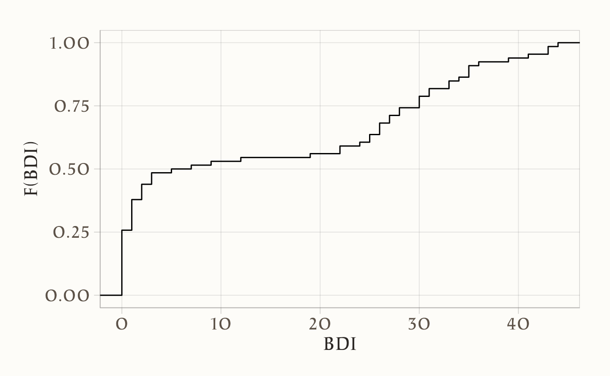
In questo grafico:
- l’asse \(x\) rappresenta i valori del BDI-II,
- l’asse \(y\) rappresenta la proporzione cumulativa dei dati, cioè \(F(a)\).
17.2.3.2 Interpretazione del grafico
- Crescita della curva: La curva della eCDF parte da 0 (nessun dato è inferiore al valore minimo osservato) e cresce gradualmente fino a 1 (tutti i dati sono inferiori o uguali al valore massimo osservato).
- Bimodalità: Se la curva presenta dei “gradini” o delle aree con una pendenza più ripida, questo può indicare la presenza di bimodalità, ovvero due gruppi distinti di dati con caratteristiche diverse. Nel caso dei dati BDI-II, la bimodalità potrebbe riflettere la presenza di due sottogruppi di partecipanti con livelli di depressione diversi.
17.2.3.3 Filtrare i dati per il campione clinico
Se vogliamo analizzare solo i dati relativi al campione clinico (ad esempio, i pazienti con depressione maggiore), possiamo filtrare i dati e rappresentare la eCDF solo per questo gruppo:
df |> dplyr::filter(group == "mdd") |>
ggplot(aes(bdi)) +
stat_ecdf() +
labs(x = "a", y = "F(a)")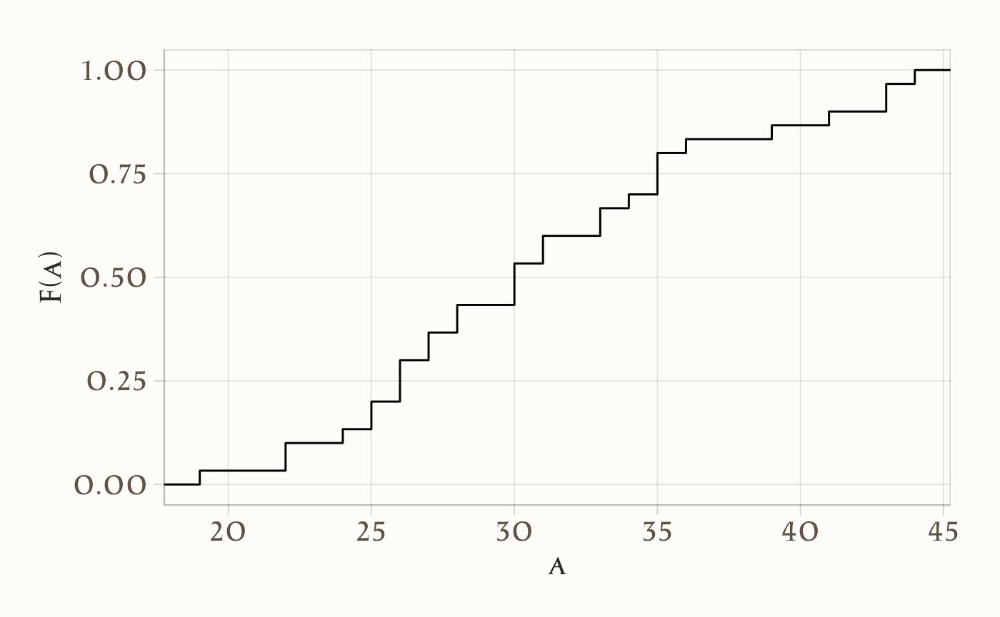
In questo caso, la eCDF ci mostrerà come i punteggi BDI-II sono distribuiti tra i pazienti con depressione maggiore, permettendoci di identificare eventuali pattern specifici per questo gruppo.
In sintesi, la eCDF è uno strumento potente per analizzare e visualizzare la distribuzione di dati numerici, specialmente quando si vogliono identificare pattern specifici o confrontare distribuzioni tra diversi gruppi.
17.3 Istogramma
Sebbene il concetto di Funzione di Distribuzione Empirica Cumulativa (eCDF) venga ampiamente discusso nei testi di statistica, in pratica tale rappresentazione non è molto diffusa. Il motivo principale è che l’eCDF non rende immediatamente visibili alcune caratteristiche fondamentali della distribuzione, come il valore intorno al quale essa è centrata, se la distribuzione sia simmetrica o quali intervalli contengano il 95% dei dati, ad esempio. Gli istogrammi, invece, sono molto più utilizzati perché facilitano notevolmente la comprensione di queste proprietà, sacrificando solo un po’ di informazione per fornire una rappresentazione più intuitiva.
Un istogramma è un grafico che rappresenta la distribuzione delle frequenze di una variabile. Sull’asse orizzontale (ascisse) vengono indicati i limiti delle classi \(\Delta_i\), mentre sull’asse verticale (ordinate) si riporta la densità della frequenza relativa della variabile \(X\) per ciascuna classe \(\Delta_i\).
Per descrivere formalmente la densità della frequenza relativa, si utilizza una funzione costante a tratti definita come:
\[ \varphi_n(x) = \frac{f_i}{b_i - a_i}, \]
dove:
- \(f_i\) è la frequenza relativa della classe \(\Delta_i\),
- \(b_i - a_i\) è l’ampiezza della classe \(\Delta_i\).
In questo modo, l’area del rettangolo corrispondente a \(\Delta_i\) in un istogramma risulta proporzionale alla frequenza relativa \(f_i\). Poiché la somma delle frequenze relative deve essere pari a 1, l’area totale di un istogramma delle frequenze relative risulta anch’essa uguale a 1, corrispondendo alla somma delle aree di tutti i rettangoli.
Gli istogrammi costituiscono quindi uno strumento essenziale per visualizzare e comprendere le principali caratteristiche di una distribuzione, agevolando l’analisi della sua forma, della sua tendenza centrale e della sua dispersione.
Per fare un esempio, costruiamo un istogramma per i valori BDI-II di Zetsche et al. (2019). Con i quattro intervalli individuati dai cut-off del BDI-II creiamo una prima versione dell’istogramma – si notino le frequenze assolute sull’asse delle ordinate.
ggplot(df, aes(x = bdi)) +
geom_histogram(
breaks = c(0, 13.5, 19.5, 28.5, 63),
aes(y = after_stat(density)), # oppure after_stat(count / sum(count))
linewidth = 0.5
) +
labs(
x = "BDI-II",
y = "Densità"
) 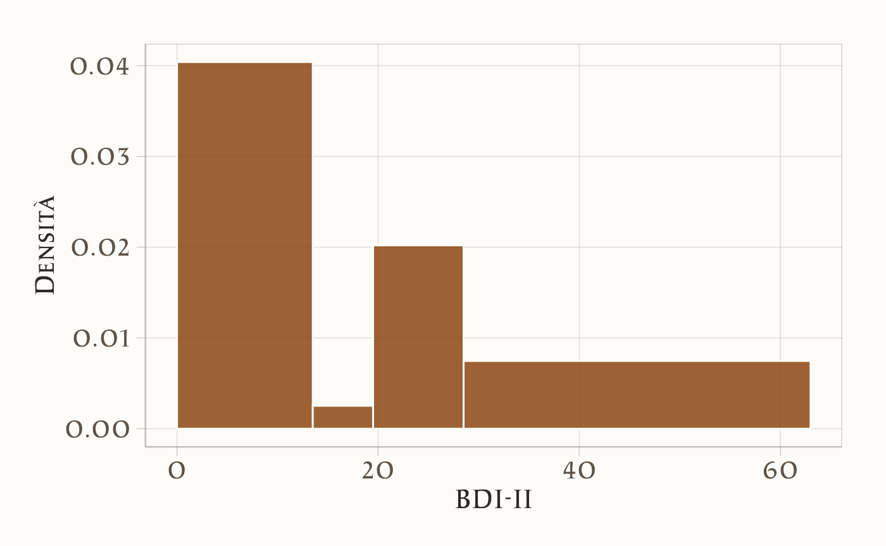
Anche se nel caso presente è sensato usare ampiezze diverse per gli intervalli delle classi, in generale gli istogrammi si costruiscono utilizzando intervalli riportati sulle ascisse con un’ampiezza uguale.
ggplot(df, aes(x = bdi)) +
geom_histogram(
aes(y = after_stat(density))
) +
labs(
x = "BDI-II",
y = "Densità"
)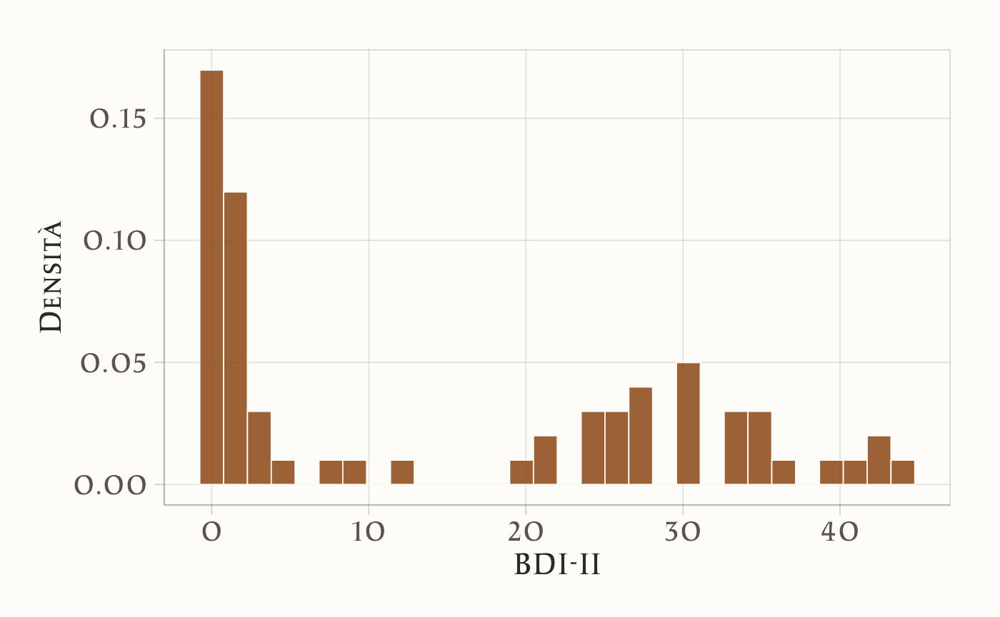
17.4 Kernel Density Plot
Un limite evidente degli istogrammi è che la loro forma dipende da scelte arbitrarie: il numero e l’ampiezza delle classi (o bin) può infatti influenzare in modo sostanziale l’aspetto finale del grafico, rendendo più difficile l’interpretazione della distribuzione dei dati. Una soluzione a questo problema è offerta dalla stima della densità kernel (Kernel Density Estimation, KDE), un metodo che fornisce un profilo continuo e smussato della distribuzione, meno condizionato dall’arbitrarietà delle classi.
17.4.1 Differenza tra istogramma e KDE
Nell’istogramma, dividiamo l’asse orizzontale in intervalli di ampiezza prefissata (i bin) e costruiamo rettangoli la cui altezza è proporzionale alla frequenza (o densità) dei dati che ricadono in ciascun intervallo. Se cambiamo il numero o la larghezza dei bin, la forma dell’istogramma può variare sensibilmente.
La KDE, invece, non suddivide i dati in intervalli fissi. Al contrario, “appoggia” una piccola curva (il kernel) su ogni singola osservazione. Le curve utilizzate (ad esempio di tipo gaussiano) hanno una larghezza, detta bandwidth, che controlla il grado di smussamento: con un bandwidth molto piccolo, la stima segue da vicino le singole osservazioni, generando un profilo più frastagliato; con un bandwidth più ampio, la curva risultante è più liscia, ma rischia di nascondere dettagli importanti.
Per comprendere in modo intuitivo il concetto di KDE, possiamo partire da un esempio semplice. Immaginiamo di costruire un istogramma con classi di ampiezza sempre più piccola. Se avessimo a disposizione un numero enorme di dati (ad esempio, un milione di misurazioni dell’altezza di individui) e li rappresentassimo con bin sempre più stretti (0.1, 0.01, ecc.), l’istogramma diventerebbe sempre più levigato, avvicinandosi a una curva continua. Questo processo illustra l’idea alla base della KDE, che approssima la distribuzione dei dati in modo fluido e continuo.
La KDE, tuttavia, opera in modo più elegante e senza richiedere un numero enorme di punti: posiziona un piccolo “dosso di campana” (o un altro tipo di kernel) su ciascun punto dati e somma tutte queste curve in un’unica curva finale.
Il risultato è una curva di densità che:
- È continua: a differenza degli istogrammi, non presenta bruschi salti di altezza tra i bin: la curva scorre in modo uniforme lungo tutto l’asse orizzontale.
- Mostra la proporzione di dati in ogni intervallo: l’area sotto la curva in un determinato range corrisponde alla percentuale (o probabilità) di dati che cadono in quell’intervallo.
-
Dipende dal bandwidth:
- Un bandwidth piccolo produce una curva più ondulata e “frastagliata” (poiché segue da vicino ogni singolo dato).
- Un bandwidth grande genera una curva più liscia e arrotondata, ma rischia di “coprire” troppi dettagli della distribuzione originaria.
Si noti che la stima della densità kernel introduce, tuttavia, un’ipotesi di fondo: che la distribuzione dei dati “reali” sia “liscia” e non presenti discontinuità improvvise. Questo è spesso ragionevole (ad esempio per dati fisiologici come l’altezza), ma in altri casi potrebbe non esserlo. È quindi importante scegliere un bandwidth che rifletta adeguatamente il livello di dettaglio che vogliamo mostrare.
Inoltre, l’asse delle ordinate (l’asse y) rappresenta la densità, non la frequenza assoluta. È possibile costruire un istogramma in cui l’altezza dei rettangoli mostra quante osservazioni ricadono in ciascun bin. Nella KDE, l’altezza della curva è tale che l’area totale sotto di essa sia pari a 1, rispecchiando la natura di una funzione di densità di probabilità.
Di seguito esaminiamo un esempio che mostra la costruzione passo dopo passo di istogrammi con diversi valori di binwidth, fino a passare a una stima di densità. Consideriemo un dataset con un numero di osservazioni molto elevato (i valori di altezza, heights, riportati da 1050 partecipanti, estratti dal pacchetto dslabs), suddiviso in due gruppi: maschi e femmine. Ecco come potremmo prima costruire un istogramma di altezze per i maschi, per poi tracciare una curva di densità smussata:
# Istogramma con bin di ampiezza 1
ggplot(heights |> dplyr::filter(sex == "Male"), aes(height)) +
geom_histogram(
binwidth = 1
)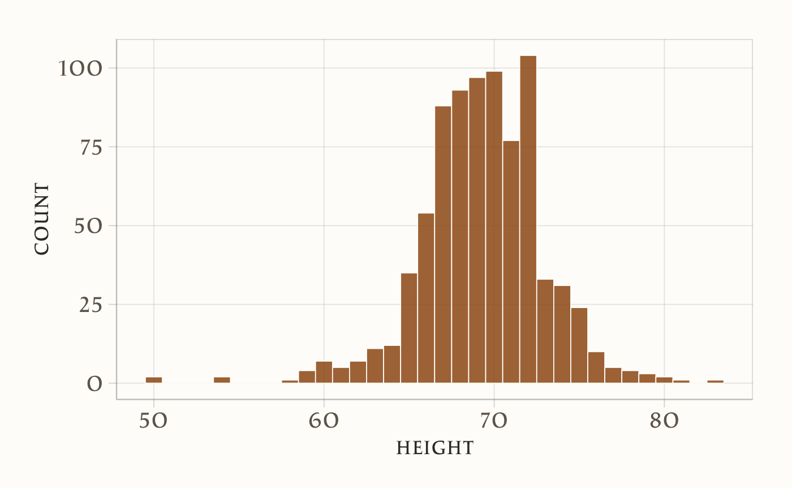
# Aggiunta della curva di densità sopra l'istogramma
ggplot(heights |> dplyr::filter(sex == "Male"), aes(height)) +
geom_histogram(
aes(y = after_stat(density)),
binwidth = 1
) +
geom_line(stat = 'density')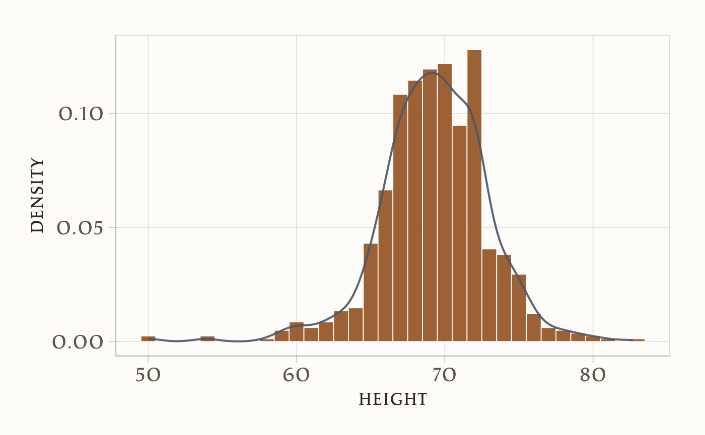
Variando il parametro di regolazione (adjust o bandwidth) nella funzione geom_density(), possiamo modificare il livello di smussamento:
# Istogramma base con alpha e colore coerente
p <- ggplot(heights |> filter(sex == "Male"), aes(x = height)) +
geom_histogram(
aes(y = after_stat(density)),
binwidth = 1
) +
labs(
x = "Altezza",
y = "Densità"
)
# Più ondulato (banda piccola)
p1 <- p +
geom_line(stat = "density", adjust = 0.5) +
labs(subtitle = "Smoothing accentuato (adjust = 0.5)")
# Più liscio (banda larga)
p2 <- p +
geom_line(stat = "density", adjust = 2) +
labs(subtitle = "Smoothing attenuato (adjust = 2)")p1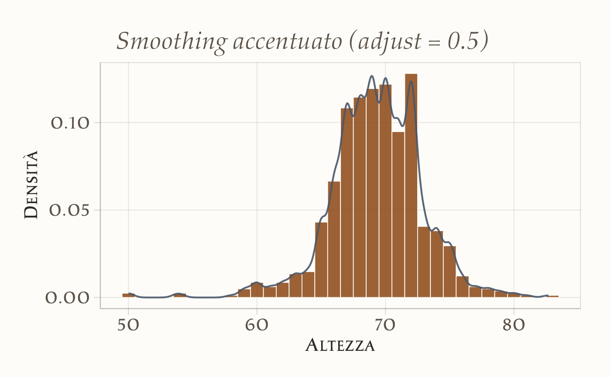
p2Per illustrare ulteriormente l’uso della KDE, ora consideriamo i punteggi BDI-II di Zetsche et al. (2019). Con il codice seguente creiamo due curve di densità, una per ogni gruppo:
ggplot(df, aes(x = bdi, fill = group)) +
geom_density() +
labs(
x = "BDI-II",
y = "Densità"
)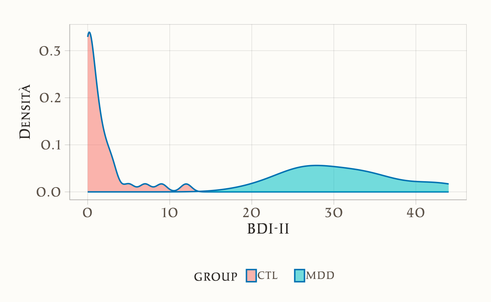
Qui, la sovrapposizione delle due curve ci consente di confrontare la distribuzione dei punteggi BDI-II tra i due gruppi in maniera molto più fluida e intuitiva rispetto a quanto faremmo con due istogrammi separati o con un istogramma combinato. Inoltre, non siamo più vincolati alla scelta dei bin: l’aspetto delle curve dipende soltanto dalla funzione kernel utilizzata e dal parametro di smussamento.
In conclusione,
- l’istogramma rimane uno strumento rapido e intuitivo, privo di assunzioni, ma sensibile alla scelta di numero e ampiezza dei bin;
- la stima della densità kernel (KDE) offre una rappresentazione continua della distribuzione dei dati, fornendo un quadro più “morbido” e spesso più informativo. Tuttavia, introduce alcune assunzioni e richiede la scelta del bandwidth ottimale.
In definitiva, è consigliabile usare entrambe le tecniche per ottenere una panoramica completa dei propri dati: l’istogramma permette di dare un primo sguardo alla loro distribuzione “grezza” (senza presupposti), mentre la KDE aiuta a comprenderne l’eventuale struttura “liscia” di fondo.
17.4.2 Area sottesa alla curva di densità: un’interpretazione probabilistica
Quando si lavora con una curva di densità, è importante capire che l’area totale sotto la curva rappresenta la probabilità totale, che è sempre pari a 1 (o 100%). Questo significa che l’area sotto la curva in un determinato intervallo corrisponde alla probabilità che un dato valore cada in quell’intervallo.
17.4.2.1 Come interpretare l’asse Y
L’asse y di un grafico di densità non rappresenta direttamente la probabilità, ma è scalato in modo che l’area totale sotto la curva sia uguale a 1. Se immaginiamo di creare un “bin” (un intervallo) con una base di 1 unità di lunghezza, il valore sull’asse y ci indica la proporzione di valori che cadono in quel bin. Tuttavia, questa interpretazione è valida solo per bin di dimensione 1. Per intervalli di altre dimensioni, il modo migliore per determinare la proporzione di dati in quell’intervallo è calcolare la proporzione dell’area totale sotto la curva che cade in quell’intervallo.
17.4.2.2 Esempio pratico
Consideriamo un esempio con i dati delle altezze degli uomini. Supponiamo di voler sapere quale proporzione di uomini ha un’altezza compresa tra 65 e 68 pollici. Per farlo, calcoliamo l’area sotto la curva di densità in quell’intervallo.
Ecco come appare graficamente:
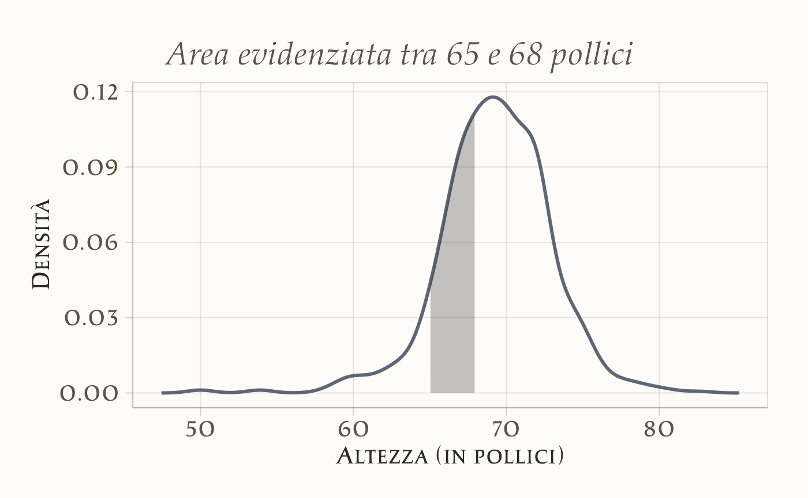
L’area evidenziata in azzurro rappresenta la proporzione di uomini con altezza tra 65 e 68 pollici. Calcolando questa area, troviamo che circa il 0.3 (ovvero il 30% degli uomini ha un’altezza in questo intervallo.
17.4.2.3 Utilizzo della curva di densità come riepilogo
Comprendendo questo concetto, possiamo utilizzare la curva di densità come un efficace strumento di riepilogo. Per questo dataset, l’assunzione di smoothness (lisciatura) della curva è ragionevole, e possiamo condividere questa rappresentazione grafica per comunicare in modo chiaro e intuitivo la distribuzione delle altezze degli uomini.
Ecco un esempio di come appare la curva di densità smooth per le altezze degli uomini:
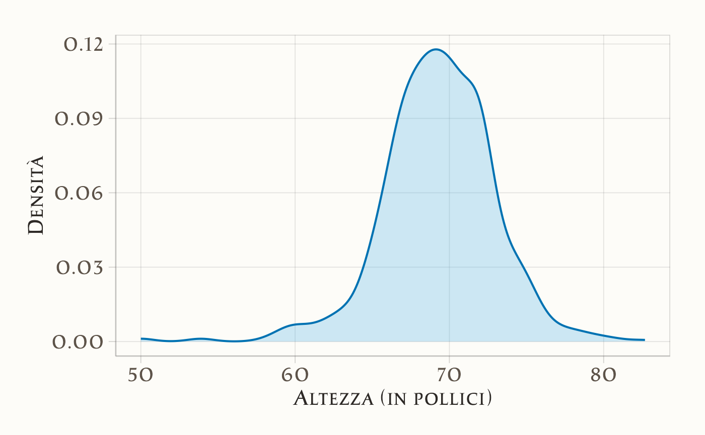
In sintesi, l’area sotto la curva di densità in un determinato intervallo rappresenta la probabilità che un valore casuale cada in quell’intervallo, rendendo la curva di densità uno strumento potente per comprendere e comunicare la distribuzione dei dati.
17.5 Forma di una distribuzione
In statistica, la forma di una distribuzione descrive come i dati sono distribuiti intorno ai valori centrali. Si distingue tra distribuzioni simmetriche e asimmetriche, e tra distribuzioni unimodali e multimodali. Un’illustrazione grafica è fornita nella figura seguente. Nel pannello 1, la distribuzione è unimodale con asimmetria negativa; nel pannello 2, la distribuzione è unimodale con asimmetria positiva; nel pannello 3, la distribuzione è simmetrica e unimodale; nel pannello 4, la distribuzione è bimodale.
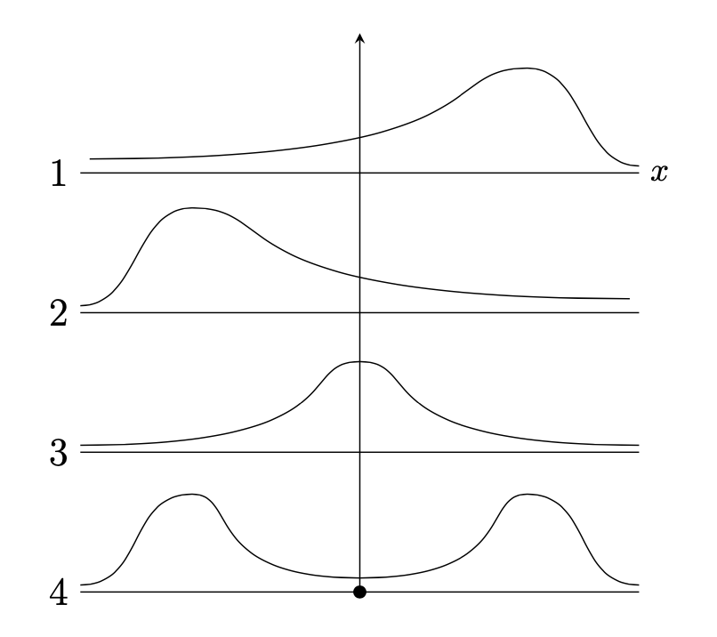
Il grafico della densità di kernel (Kernel Density Plot) dei valori BDI-II nel campione di Zetsche et al. (2019) è bimodale. Questo indica che le osservazioni della distribuzione si raggruppano in due cluster distinti: un gruppo di osservazioni tende ad avere valori BDI-II bassi, mentre l’altro gruppo tende ad avere valori BDI-II alti. Questi due cluster di osservazioni corrispondono al gruppo di controllo e al gruppo clinico nel campione di dati esaminato da Zetsche et al. (2019).
17.6 Indici di posizione
17.6.1 Quantili
La distribuzione dei valori BDI-II di Zetsche et al. (2019) può essere sintetizzata attraverso l’uso dei quantili, che sono valori caratteristici che suddividono i dati in parti ugualmente numerose. I quartili sono tre quantili specifici: il primo quartile, \(q_1\), divide i dati in due parti, lasciando a sinistra il 25% del campione; il secondo quartile, \(q_2\), corrisponde alla mediana e divide i dati in due parti uguali; il terzo quartile lascia a sinistra il 75% del campione.
Inoltre, ci sono altri indici di posizione chiamati decili e percentili che suddividono i dati in parti di dimensioni uguali a 10% e 1%, rispettivamente.
Per calcolare i quantili, i dati vengono prima ordinati in modo crescente e poi viene determinato il valore di \(np\), dove \(n\) è la dimensione del campione e \(p\) è l’ordine del quantile. Se \(np\) non è un intero, il valore del quantile corrisponde al valore del dato che si trova alla posizione successiva alla parte intera di \(np\). Se \(np\) è un intero, il valore del quantile corrisponde alla media dei dati nelle posizioni \(k\) e \(k+1\), dove \(k\) è la parte intera di \(np\).
Gli indici di posizione possono essere utilizzati per creare un box-plot, una rappresentazione grafica della distribuzione dei dati che è molto popolare e può essere utilizzata in alternativa ad un istogramma.
Ad esempio, per calcolare la mediana della distribuzione dei nove soggetti con un unico episodio di depressione maggiore del campione clinico di Zetsche et al. (2019), si determina il valore di \(np = 9 \cdot 0.5 = 4.5\), che non è un intero. Pertanto, il valore del secondo quartile è pari al valore del dato che si trova alla posizione successiva alla parte intera di \(np\), ovvero \(q_2 = x_{4 + 1} = 27\). Per calcolare il quantile di ordine \(2/3\), si determina il valore di \(np = 9 \cdot 2/3 = 6\), che è un intero. Quindi, il valore del quantile corrisponde alla media dei dati nelle posizioni \(6\) e \(7\), ovvero \(q_{\frac{2}{3}} = \frac{1}{2} (x_{6} + x_{7}) = \frac{1}{2} (33 + 33) = 33\).
Usiamo quantile() per trovare la soluzione dell’esercizio precedente.
17.7 Mostrare i dati
17.7.1 Diagramma a scatola
Il box plot è uno strumento grafico che visualizza la dispersione di una distribuzione. I boxplot forniscono una rappresentazione visiva sintetica di cinque valori caratteristici: minimo, primo quartile (25%), mediana (50%), terzo quartile (75%) e massimo. Spesso però, i boxplot “ignorano” i valori considerati anomali (outlier), segnalandoli con punti isolati.
Per creare un box plot, si disegna un rettangolo (la “scatola”) di altezza arbitraria, basato sulla distanza interquartile (IQR), che corrisponde alla differenza tra il terzo quartile (\(q_{0.75}\)) e il primo quartile (\(q_{0.25}\)). La mediana (\(q_{0.5}\)) è rappresentata da una linea all’interno del rettangolo.
Ai lati della scatola, vengono tracciati due segmenti di retta, detti “baffi”, che rappresentano i valori adiacenti inferiore e superiore. Il valore adiacente inferiore è il valore più basso tra le osservazioni che è maggiore o uguale al primo quartile meno 1.5 volte la distanza interquartile. Il valore adiacente superiore è il valore più alto tra le osservazioni che è minore o uguale al terzo quartile più 1.5 volte la distanza interquartile.
Se ci sono dei valori che cadono al di fuori dei valori adiacenti, vengono chiamati “valori anomali” e sono rappresentati individualmente nel box plot per evidenziare la loro presenza e posizione. In questo modo, il box plot fornisce una rappresentazione visiva della distribuzione dei dati, permettendo di individuare facilmente eventuali valori anomali e di comprendere la dispersione dei dati.

17.7.2 Stratificazione
Nell’analisi dei dati, è comune suddividere le osservazioni in gruppi in base ai valori di una o più variabili associate a tali osservazioni. Questo processo è chiamato stratificazione, e i gruppi risultanti sono detti strati. Ad esempio, nella sezione successiva, dividiamo i valori dei punteggi BDI-II in due gruppi in base alla condizione sperimentale: campione clinico e campione di controllo.
La stratificazione è particolarmente utile nella visualizzazione dei dati, poiché spesso siamo interessati a comprendere come la distribuzione di una variabile differisca tra diversi sottogruppi.
Per esempio, per rappresentare graficamente la distribuzione dei punteggi BDI-II nel gruppo dei pazienti e nel gruppo di controllo, possiamo utilizzare un box-plot. Questo tipo di grafico ci permette di confrontare visivamente la distribuzione dei punteggi tra i due gruppi, evidenziando eventuali differenze.
ggplot(df, aes(x = group, y = bdi)) +
geom_boxplot() +
labs(
x = "Gruppo",
y = "BDI-II"
)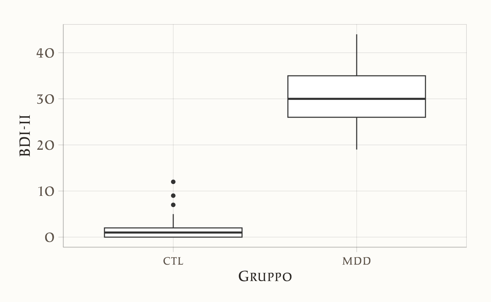
In questo grafico:
- l’asse x rappresenta i due gruppi (pazienti e controllo),
- l’asse y rappresenta i punteggi BDI-II,
- i box (scatole) mostrano la distribuzione dei punteggi, con la linea centrale che indica la mediana e i “baffi” che rappresentano la variabilità dei dati.
La stratificazione ci aiuta a identificare rapidamente se ci sono differenze nella distribuzione dei punteggi BDI-II tra i due gruppi. Nel caso presente, il grafico mostra come non vi sia alcuna sovrapposizione tra le due distribuzioni.
Un risultato migliore si ottiene utilizzando un grafico a violino (violin plot) e includendo anche i dati grezzi.
17.7.3 Grafico a violino
I grafici a violino combinano le caratteristiche dei box plot e dei grafici di densità di kernel (KDE plot) per offrire una rappresentazione più dettagliata dei dati.
ggplot(df, aes(x = group, y = bdi, fill = group)) +
geom_violin() +
labs(
x = "Gruppo",
y = "BDI-II"
)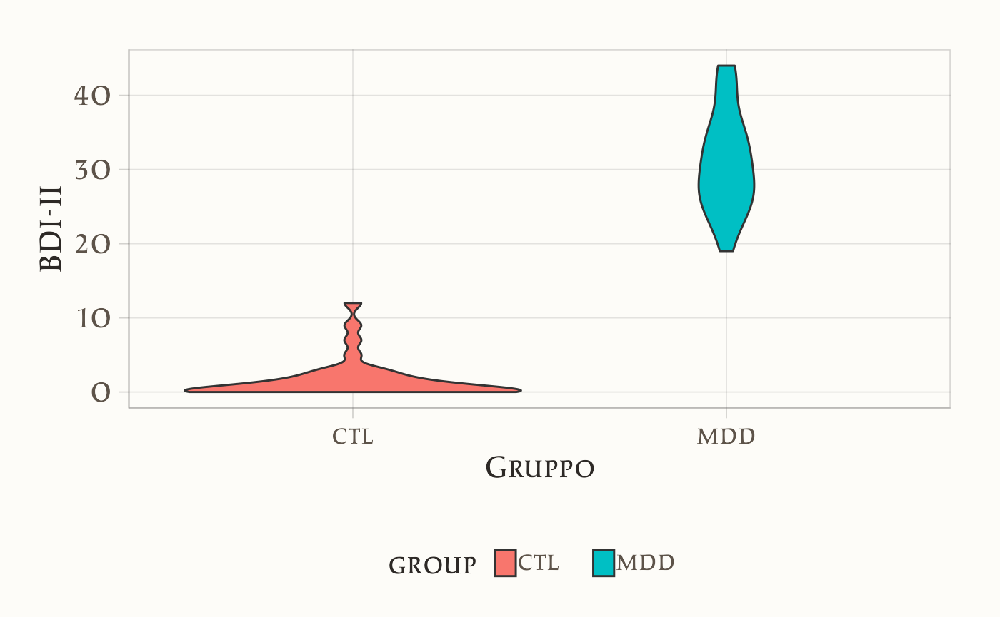
17.7.4 Grafico Beeswarm
Il pacchetto {ggbeeswarm} include una funzione chiamata geom_beeswarm, che può essere utilizzata per creare un grafico beeswarm in ggplot2. Un grafico beeswarm è una variazione del grafico a punti che disperde i dati in modo che non si sovrappongano, rendendo visibili tutti i singoli punti dati. Questo tipo di visualizzazione è particolarmente utile quando si desidera esaminare la distribuzione e la densità di un set di dati, senza ricorrere all’uso di barre d’errore o di scatole e baffi (boxplot), mantenendo un’alta leggibilità anche quando i set di dati sono densi.
ggplot(df, aes(x = group, y = bdi, color = group)) +
geom_beeswarm(cex = 2) +
labs(
x = "Gruppo",
y = "BDI-II"
) 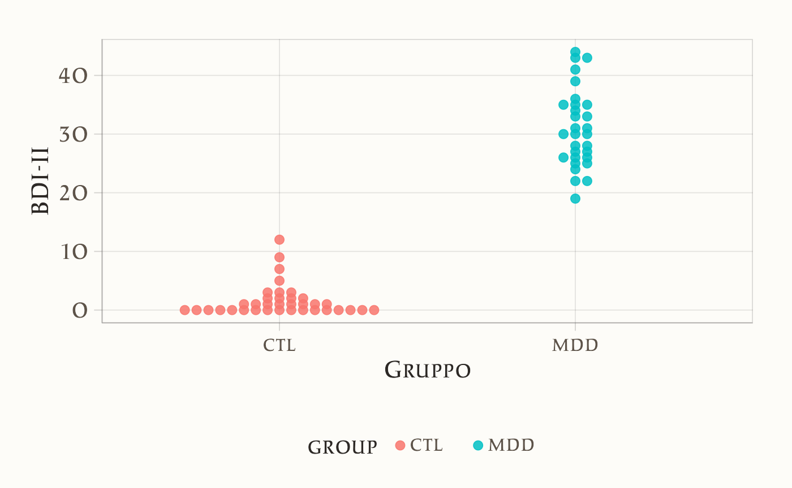
Riflessioni conclusive
In questo capitolo abbiamo illustrato una varietà di tecniche per sintetizzare e visualizzare i dati numerici, concentrandoci sia sugli aspetti descrittivi (come distribuzioni di frequenze, istogrammi e distribuzioni cumulative) sia su metodi più raffinati come la stima della densità kernel. Questi strumenti non solo facilitano la comprensione immediata dei pattern e delle caratteristiche fondamentali dei dati, ma rappresentano anche un passaggio essenziale per identificare anomalie e guidare ulteriori analisi statistiche.
La capacità di trasformare dati grezzi in rappresentazioni grafiche chiare e intuitive è fondamentale per comunicare in modo efficace i risultati dell’analisi, soprattutto quando si tratta di supportare decisioni pratiche o di sviluppare ipotesi di ricerca. In questo senso, una visualizzazione accurata e ben strutturata consente di evidenziare aspetti come la forma della distribuzione, la presenza di outlier e le differenze tra sottogruppi, contribuendo a una più profonda interpretazione dei fenomeni studiati.
Infine, l’integrazione di tecniche di visualizzazione con analisi statistiche sintetiche migliora la trasparenza e l’interpretabilità dei dati, offrendo un quadro completo che supporta sia la valutazione critica che la comunicazione dei risultati.
Bibliografia
Diener, E., Emmons, R. A., Larsen, R. J., & Griffin, S. (1985). The Satisfaction With Life Scale. Journal of Personality Assessment, 49(1), 71–75. https://doi.org/10.1207/s15327752jpa4901_13
Lubben, J., Blozik, E., Gillmann, G., Iliffe, S., Renteln Kruse, W. von, Beck, J. C., & Stuck, A. E. (2006). Performance of an abbreviated version of the Lubben Social Network Scale among three European community-dwelling older adult populations. The Gerontologist, 46(4), 503–513. https://doi.org/10.1093/geront/46.4.503
Zetsche, U., Buerkner, P.-C., & Renneberg, B. (2019). Future expectations in clinical depression: biased or realistic? Journal of Abnormal Psychology, 128(7), 678–688.